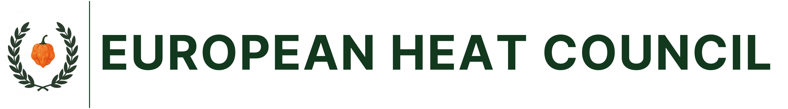

A bootstrapped 24-month path from €20k of founder cash to EU-funded production capacity for ROH in the Lausitz transition region. Phase 0 contract bottling, Phase 1 owned production with JTF, Phase 2 scale-up under stacked grants.
Republic of Heat (ROH) is a German commercial entity in the food sector, currently doing around €20,000 of revenue per year and operating at a loss. The European Heat Council (EHC) is its institutional brand vehicle, running certification, press and council activity. Neither has a dedicated production facility. Sauces are made in shared / borrowed kitchens with no scale and no margin.
This is a small business. It is also sitting on the doorstep of a serious EU funding opportunity, with a viable bootstrapped path to use it. The Just Transition Fund Brandenburg pays 70 percent of fit-out costs up to €300,000 for SMEs in the Lausitz region. Wildau, in Landkreis Dahme-Spreewald, is JTF-eligible, S-Bahn-reachable from Berlin, and on the natural commercial map for a German food business serving DACH B2B + e-commerce.
Three pots stack on a Brandenburg SME productive-investment project, on separate cost categories. Combined, they can fund up to 80 percent of total project cost at full project scale.
| Programme | Body | Co-finance | Covers |
|---|---|---|---|
| JTF-Unternehmensförderung (De-minimis track) | ILB | 70% | Production equipment, fit-out, retail. €300k project cap, €210k grant ceiling |
| GRW-G Brandenburg + 10% Polish-border bonus | ILB | up to 45% | Building works, site preparation, ancillary fit-out |
| GAK/AFP Marktstrukturverbesserung | BMEL via Land | 25-40% | Agricultural-product-processing equipment (fermentation, processing machinery) |
The reimbursement model. ILB pays against documented, paid invoices submitted after the work is done. Cash flow is on the applicant for 6-12 weeks per claim. A €100k project needs the applicant to front the full €100k before any grant money arrives. Working capital is the binding constraint, not the application itself.
Application must be filed before any work begins on the project. Programme window closes 30 June 2027. By August 2025 over 1,000 JTF applications had already been filed in Lausitz. The pot is saturating. Phase 1 application should land Q4 2026 / Q1 2027 at latest.
Berlin is the most expensive way to fit out a small food business in eastern Germany. It has no JTF, no GRW Wildau-style stack, no programme that pays anywhere near 70 percent on production capex. Berlin's grant map skews to R&D, AI and digitalisation, not to bottling lines.
| For a €100k production project | Wildau | Berlin |
|---|---|---|
| Top headline grant rate | 70% (JTF) | 50% (GründungsBONUS Plus) |
| Realistic grant ceiling at €100k project | €70-80k | €25-50k |
| Industrial rent (€/m²/month) | €7-10 | €15-30 |
| Gewerbesteuer (effective rate on profit) | 12.25% | 14.35% |
| S-Bahn reach from central Berlin | 40 min | in city |
A Berlin shared production kitchen (Herzensküche-class) charges €250 per day shared, €450 per day exclusive. At a 30,000-bottle-per-year target the unit math is brutal:
30,000 bottles/year ÷ 1,200 bottles/production day = 25 production days/year.
25 days × €250 shared rate = €6,250 per year in kitchen rent alone.
That is 31 percent of current ROH revenue spent on a non-improvable, non-owned cost line. Before storage, transport, insurance, packaging logistics.
Crazy Bastard Sauce, Berlin's most-recognised independent sauce maker, never used a shared kitchen. They went home kitchen (2013), market stand, then straight to their own production-by-weekday / restaurant-by-weekend space in Neukölln. The only purpose-built Berlin production kitchen for indie makers, KitchenTown, gave up on rental in January 2026 and pivoted to an equity-for-accelerator model.
Shared kitchen as a permanent operating model does not pencil for a small-batch sauce producer. The real options are contract bottling in Brandenburg as Phase 0, then owned production in Wildau under JTF as Phase 1.
From go decision to live production in Wildau. Three phases, each with its own commercial logic. No commitment to Phase 1 until Phase 0 has proven the unit economics work at scale.
Months 1-12. No fixed cost. ROH pays per batch to a Brandenburg Lohnabfüller (contract bottler), keeping working capital free to fund revenue growth. The Phase 0 outcome is twelve months of operating data, a believable P&L for the JTF application, and proven product-market fit at scale before any owned-production commitment.
| Operator | Location | Offer | Why it fits |
|---|---|---|---|
| Yuneiko | Berlin Grüngürtel | Bio-certified contract filler, per-batch quote | Bio certification optionality, sub-30 min drive from Berlin, talks to small makers |
| YouFlake / BeFoodFilled | Berlin-Lichtenberg | Bio contract production + fulfilment, 12 years experience | Production + e-com fulfilment in one supplier, sauces possible via custom quote |
| Line | €/bottle | Notes |
|---|---|---|
| Lohnabfüller fee (production + bottling) | €1.20-1.80 | To be confirmed by quote |
| Ingredients (chilli, vinegar, salt, spices) | €0.60-1.00 | Better at scale |
| Bottle + cap + label | €0.50-0.80 | Volume-dependent |
| Logistics + storage allocation | €0.20-0.40 | Depends on fulfilment model |
| Total cost per bottle | €2.50-4.00 | |
| Target retail / B2B price | €7.50-12.00 | 3× cost rule of thumb |
JTF De-minimis fixes the grant at 70 percent of project cost. Own contribution is therefore always 30 percent. Project size is determined by how much own contribution ROH can put on the table — either as cash, or as private debt that ILB counts as own contribution.
| Own contribution | Max project | Grant (70%) | Source of own contribution |
|---|---|---|---|
| €15,000 | €50,000 | €35,000 | Founder cash only, minimum-viable Phase 1 |
| €20,000 | €66,667 | €46,667 | Founder cash only, slightly larger |
| €45,000 | €150,000 | €105,000 | €20k cash + €25k Brandenburg Mikrokredit. The bootstrap target. |
| €70,000 | €230,000 | €160,000 | €20k cash + €50k KfW StartGeld with BBB guarantee |
| €90,000 | €300,000 (De-minimis cap) | €210,000 | €20k cash + €70k KfW Universell, maxes Phase 1 |
KfW loans count as own contribution under ILB rules. Every €1 of loan unlocks €3.33 of project capacity and €2.33 of grant. The multiplier is large. The constraint at ROH's current stage is bank-ability of the debt, not the headline rate.
Best fit for ROH given €20k cash + loss-making €20k revenue: €20k founder cash combined with €25k Brandenburg Mikrokredit (Mikrokreditfonds Deutschland) totals €45k of own contribution. This unlocks a €150k project and ~€105k grant. The Mikrokredit is specifically designed for businesses below typical bank thresholds, requires no founder salary, and serves a second purpose as the working-capital bridge during the 6-12 week ILB reimbursement cycle.
The €45k/€150k tier gets ROH a real B2B production line. Budget breakdown on the next page. Larger tiers exist but require credit-worthy ROH books that twelve months of Phase 0 revenue growth will produce.
Sized to the €150k project / €105k grant tier. Real B2B production capacity. Output capability of 5,000-10,000 bottles per month depending on shift pattern. Designed to mirror the Reuner Denise template line-for-line so ILB caseworkers in LDS read it as a known shape.
| Line item | Cost | Category |
|---|---|---|
| Semi-auto bottling rig (200-500 bottles/hour) | €22,000 | Equipment |
| Steam-jacketed cooking kettle (100-200L) | €16,000 | Equipment |
| Walk-in cold storage (or large fridge bank) | €14,000 | Equipment |
| Capping + semi-auto labelling machines | €14,000 | Equipment |
| Stainless prep area (tables, sinks, extraction) | €12,000 | Fixture |
| Branded fit-out (industrial, EHC identity) | €10,000 | Fit-out |
| Packing line (shrink wrapper, boxer, dispatch) | €8,000 | Equipment |
| Retail counter + display shelving | €7,000 | Fixture |
| QA lab corner (pH, refractometer, scales, EHC Verified) | €7,000 | Equipment |
| Software (batch tracking, ERP, e-commerce integration) | €7,000 | Intangible |
| Mobile POS, kitchen display, card terminals | €6,000 | Equipment |
| Planning fees (architect, ILB project plan) | €6,000 | Planning |
| Signage and wayfinding (exterior + interior) | €5,000 | Equipment |
| Contingency (10%) | €16,000 | — |
| Phase 1 project total | €150,000 |
Lease deposit, six months of rent, opening stock, first hire, and marketing launch are not eligible costs. Plan for a separate ~€15k working-capital pool from Phase 0 revenue growth.
Phase 1's €105k grant uses €105k of the €300k De-minimis ceiling per beneficiary per rolling three years. That leaves €195k of De-minimis headroom available for a second tranche, plus full access to GRW and GAK which are not De-minimis-counted.
Phase 2 targets the full Sauce Werk Wildau ambition: automated bottling line, larger cold-storage, full event/retail showroom, possibly the tasting room ambition revisited as a B2B trade-event venue. Funded primarily from operating revenue (which Phase 1 production unlocks) plus a stacked grant application.
| Pot | Eligible cost | Rate | Grant |
|---|---|---|---|
| JTF De-minimis (second tranche) | €200,000 | 70% | €140,000 |
| GRW-G + Polish-border bonus | €80,000 | 45% | €36,000 |
| GAK/AFP food processing | €70,000 | 35% | €24,500 |
| Phase 2 totals | €350,000 | ~57% blended | €200,500 |
Across Phase 1 + Phase 2: €500,000 total project value, ~€305,500 of EU/Federal grants, ~€195,000 own contribution funded from cash, debt and operating revenue. Sauce Werk Wildau reaches full-capacity production over a 24-36 month build.
ROH cannot lift the own contribution above €20k from cash alone. The bridge is project-secured debt that ILB counts as Eigenkapital. Three instruments are realistic at ROH's current scale.
| Instrument | Amount | Cost | Fit at ROH's stage |
|---|---|---|---|
| Brandenburg Mikrokredit | up to €25k | varies | Designed exactly for businesses below bank thresholds. No founder salary check. Looser collateral. The right Phase 1 instrument. |
| KfW StartGeld (067) + Bürgschaftsbank Brandenburg guarantee | up to €125k | ~4.8%, 5-10y, 1-2 grace years | Possible if ROH books defensible. BBB guarantee covers 50-80% of bank risk so house bank lends despite weak collateral |
| Mikromezzaninfonds Deutschland III | up to €100k | stille Beteiligung, profit-share only | Phase 2 instrument. Counts as Eigenkapital, no monthly debt service, but wants growth signals — not available until ROH has 12 months of post-Phase-0 revenue |
€20k founder cash + €25k Brandenburg Mikrokredit = €45k own contribution.
Mikrokredit also serves as the working-capital bridge during the 6-12 week ILB reimbursement cycle. Loan service approximately €280-320 per month. Sustainable if Wildau production lifts ROH revenue toward €60-100k within 12 months of opening.
Three sets of evidence anchor the plan. The Berlin scale ladder shows the right operational path. The Wildau JTF dataset shows the funding path is real and reproducible. The Reuner template shows the exact shape of a successful LDS application.
| Stage | Revenue band | Production | Reference |
|---|---|---|---|
| 1. Home kitchen, grey zone | €0-15k | Domestic, markets, online | Crazy Bastard 2013 |
| 2. Sublet from a friendly food maker | €15-50k | Pay-per-session in someone else's space | Common indie route |
| 3. Shared production kitchen | €30-80k | Herzensküche / GLÜXGEFÜHL — €1-2k/month | Mostly used by caterers, not bottlers |
| 4. Own production space | €80-200k+ | Mixed-use building, ~€2-4k/month + fitout | Crazy Bastard Neukölln |
| 5. Regional own facility | €200k+ | Brandenburg / industrial zone, ~€8-15/m² | Sauce Werk Wildau target |
ROH is between stages 1 and 2. Phase 0 contract bottling skips stage 3 (which doesn't work for bottled product) and lands ROH at stage 2 with revenue growth. Phase 1 JTF jumps to stage 5 directly, funded by the EU.
| Cost | Rate | Beneficiary | Project |
|---|---|---|---|
| €366,817 | 70% | Gexx aeroSol GmbH | Productive capacity expansion |
| €198,649 | 70% | Bühr Anlagenbau & Service GmbH | New operating site set-up |
| €299,600 | 70% | Reuner Denise (Schlepzig, same Landkreis) | Outdoor kitchen, bar, terrace, event kit, POS — the template |
| €426,930 | 68% | Deqish Handels GmbH (Cottbus) | Food-manufacturing machinery + room conversion |
| €950,000 | 45% | Kunella Feinkost GmbH (Cottbus) | Food manufacturing capacity expansion |
Eight JTF projects funded in Wildau itself to date; none have been food production. Sauce Werk would be the first Wildau food-production fit-out. The Reuner Denise template (20 km south, same Landkreis, same Richtlinie, same Maßnahme) gives ILB caseworkers a known shape to anchor on.
Each item has been weighed before this plan was committed to paper. The phased shape exists specifically because the risks were too concentrated when collapsed into a single Phase 1 build. The bigger ones now sit in execution, not in plan structure.
ILB pays grant against paid invoices, 6-12 weeks behind. €150k project requires fronting €150k. Mitigation: Brandenburg Mikrokredit doubles as bridge facility; phased equipment purchase if needed.
Loss-making €20k applicant invites questions. Mitigation: Phase 0 revenue growth gives 12 months of operating data and a credible 3-year P&L for the application file.
JTF Lausitz saturating. Late application risks rejection on allocation, not merit. Mitigation: anchor Phase 1 application to Q4 2026 / Q1 2027. If Phase 0 revenue is slow, reassess.
BBB guarantee on KfW loan is discretionary. Mitigation: Brandenburg Mikrokredit (no guarantee needed) is the Phase 1 default. KfW only triggers if Phase 2 own contribution targets justify it.
Phase 0 puts production quality in someone else's hands. Mitigation: visit operator before signing. Run pilot batch with quality testing. Document recipe and quality criteria in writing.
Funded assets must stay in JTF region for 3 years. Lease ending inside that triggers clawback. Mitigation: 5+5 year lease, tenant-improvement clause, Wirtschaftsanwalt review.
Eight Wildau JTF projects, none food. Caseworkers process a new pattern. Mitigation: lean on Reuner template (LDS, same Richtlinie). Add TH Wildau food-research letter of support.
If 12 months of Phase 0 leaves ROH at €30k revenue not €60-80k, the Phase 1 case weakens. Mitigation: extend Phase 0 by 6 months; reduce Phase 1 project size; consider holding off Phase 1 until 2027.
| Action | Who | Outcome wanted |
|---|---|---|
| Phone Yuneiko | Founder | Per-batch quote for acidified chilli sauce, MOQ, lead time, ingredients-supplied option |
| Phone YouFlake / BeFoodFilled | Founder | Same questions as Yuneiko. Compare. Pick one |
| Confirm ROH legal form | Founder | German GmbH / UG / GbR. Determines JTF applicant eligibility |
| Pull ROH De-minimis history | Founder + bookkeeper | Any prior De-minimis aid in last 3 years counts against the €300k ceiling |
Book the ILB Beratung call. Phone +49 331 660 1234 or email kundencenter@ilb.de. Ask for JTF-Unternehmensförderung Beratung. Free 30-60 min call. Validates Sauce Werk Wildau scope and the stacked JTF + GRW + GAK question at zero cost. Talking points in companion document ilb-beratung-call-prep.md.
IN ARDORE CONCORDIA